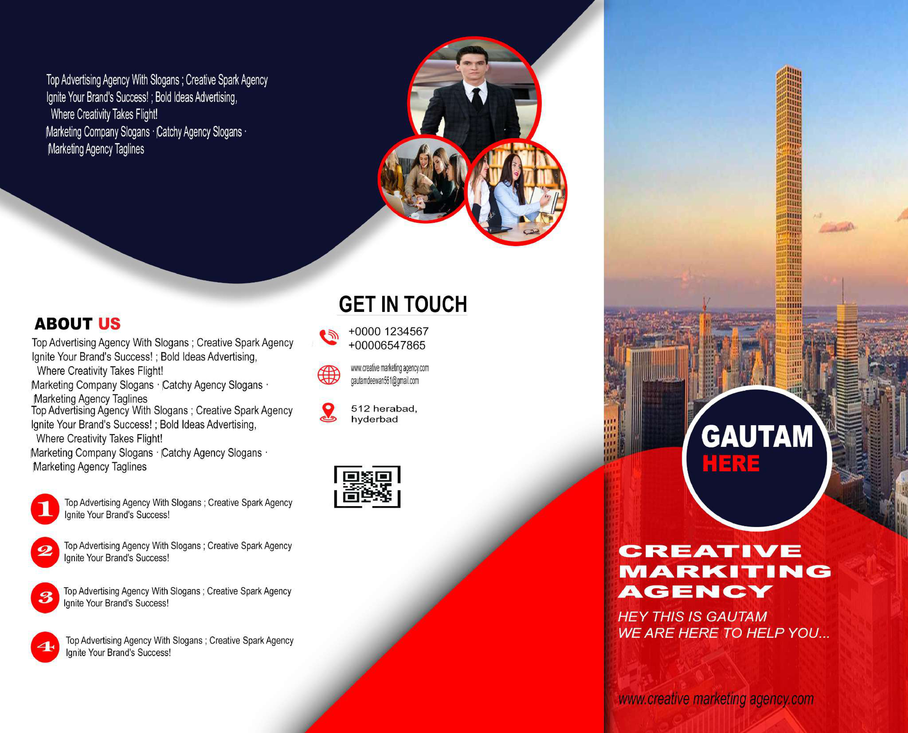

SOC Analyst (Level 1) Playbook: SIEM Monitoring with Splunk & ELK Stack
A practical breakdown of triage workflows, anomaly detection in event logs, and real-time incident response for modern security operations centers.
Thoughts on tech, security, and development

A practical breakdown of triage workflows, anomaly detection in event logs, and real-time incident response for modern security operations centers.

May 05, 2026
Capturing and inspecting TCP/IP packets to isolate port scans, ARP spoofing, and malicious communication channels.
Read Article
April 28, 2026
Techniques for building scalable React components, managing asynchronous state, and crafting fluid mobile-first layouts.
Read ArticleApril 20, 2026
Case study on creating the Go Route travel series — color grading, typography hierarchy, and conversion-focused social banners.
View Projects
April 14, 2026
Real-world configurations for 802.1Q trunking, inter-VLAN routing, ACL security, and hardware troubleshooting in lab environments.
Read Article
April 07, 2026
Setting up bleed, CMYK vs RGB considerations, and grid balancing for tri-fold brochures in Adobe Photoshop & Illustrator.
View Projects
March 30, 2026
Writing scripts to automate Nmap port discovery, service enumeration, and alert reporting for proactive defense.
Read Article